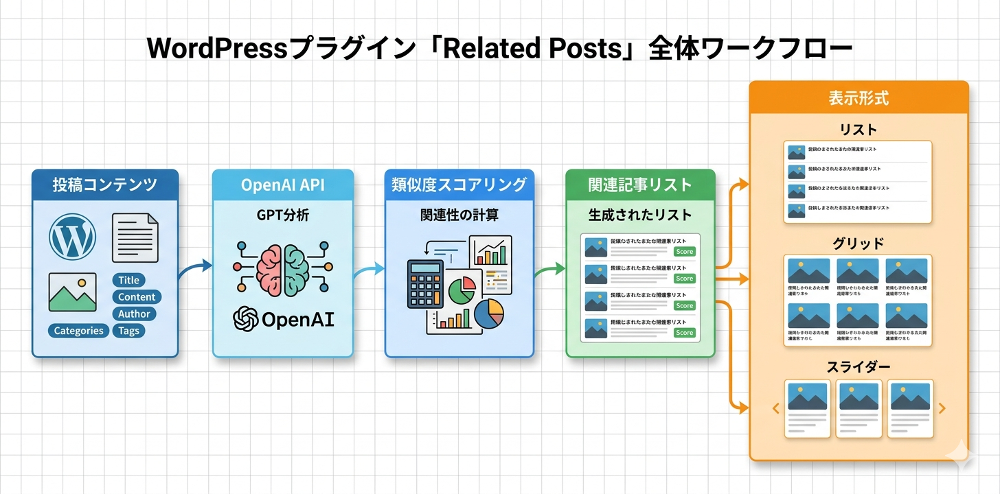

Kashiwazaki SEO Related Posts マニュアル

Kashiwazaki SEO Related Posts は、OpenAI GPTを活用して記事間の類似度を分析し、最適な関連記事を自動提案するAI搭載のWordPressプラグインです。グローバル・投稿タイプ別・投稿個別の3階層設定、リスト・グリッド・スライダーの3表示形式、6色のカラーテーマに対応し、高品質な内部リンク構造の構築を支援します。
関連記事の表示は、内部リンクの強化とユーザーの回遊率向上に直結します。本プラグインはOpenAI GPTを活用して記事間の類似度を分析し、最適な関連記事を自動提案します。
主な機能
AI関連記事
OpenAI GPTで記事間の類似度を分析し最適な関連記事を自動提案
表示形式
リスト・グリッド・スライダーの3形式に対応。6色のカラーテーマ
3階層設定
グローバル・投稿タイプ別・投稿個別の3段階で関連記事設定をカスタマイズ
プラグインの特長
- OpenAI GPTによるAI関連記事の自動提案（類似度スコアリング）
- グローバル・投稿タイプ別・投稿個別の3階層設定
- リスト・グリッド・スライダーの3表示形式に対応
- 6色のカラーテーマから選択可能
- 6つのAJAXハンドラーによる非同期処理
- Transientキャッシュによるパフォーマンス最適化
- ショートコードとウィジェットに対応
- フロントエンド: CSS 24KB、JS 7.4KB

SEO・GEO（生成AI最適化）への効果
内部リンク品質の向上
AIによる関連記事のレコメンデーションは、単純なカテゴリやタグベースの関連記事よりも高品質な内部リンク構造を構築します。記事間の意味的な類似度に基づくリンクにより、ユーザーにとっても検索エンジンにとっても有用なナビゲーションが実現されます。
リンクエクイティの分散とクロール効率
適切な内部リンクはリンクエクイティ（PageRank）をサイト内に効率的に分散させます。また、検索エンジンのクローラーがサイト内のページをより効率的に発見・インデックスできるようになります。
直帰率の低下とセッション時間の向上
関連性の高い記事を表示することで、ユーザーの直帰率が低下し、サイト内の回遊が促進されます。セッション時間の増加はユーザーエンゲージメントの指標として、検索エンジンからの評価向上に寄与します。
生成AI（GEO）への対応
強力な内部リンク構造は、AIがサイト内のトピッククラスター（関連するコンテンツ群）を理解するのに役立ちます。AIは内部リンクのパターンからコンテンツ間の関連性を把握し、特定トピックに対するサイトの専門性を評価する材料として活用する可能性があります。
目次（マニュアル構成）
| ページ | 内容 |
|---|---|
| 概要 | プラグインの機能概要、SEO/GEO効果、動作要件 |
| インストール・初期設定 | インストール手順、OpenAI APIキー設定、表示形式・カラーテーマの基本設定 |
| 詳細設定 | 3階層設定、ショートコード・ウィジェット、キャッシュ管理 |
| トラブルシューティング | よくある問題と対処法、動作要件、技術仕様、アーキテクチャ |
動作要件
| 項目 | 要件 |
|---|---|
| WordPress | 5.0 以上 |
| PHP | 7.4 以上 |
| OpenAI APIキー | AI関連記事機能を使用する場合は必須 |
| 対応ブラウザ | Chrome、Firefox、Safari、Edge（最新版） |
インストール後すぐに使い始めたい場合は、インストール・初期設定ページに進んでください。